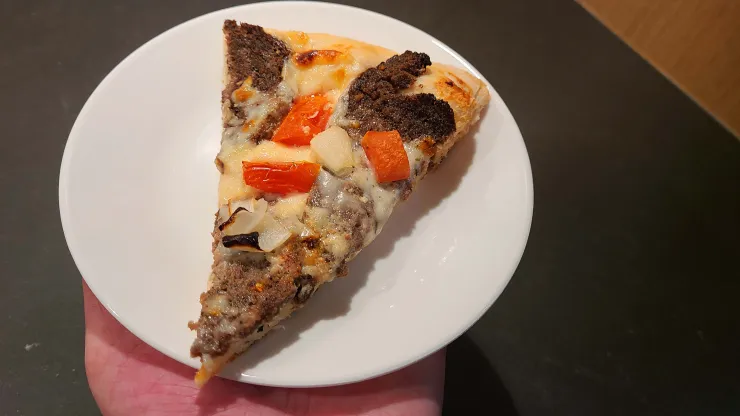

Beef Donair Pizza

Description
This homemade donair recipe is based on the legendary West Coast donair created in the city of Seattle by an Asian-American restauranteur in the early 90's. Originally made with ground beef and garnishes are chopped onions and fresh diced tomatoes.

Ingredients
Toppings
- 2 cups Beef Donair instructions below
- 2 cups Mozzarella cheese
- 1 cup Donair sauce instructions below
- 1 cup Tomatoes
- ½ cup Onions
Dough
- 2 cups Sourdough starter
- 1 cup Bread flour
- 1 tsp Salt
Beef Donair
- 1 lb Ground beef
- 1 tsp Oregano
- 1 tsp Flour
- 1 tsp Salt
- ½ tsp Thyme
- ½ tsp Basil
- ½ tsp Garlic powder
- ½ tsp Onion powder
- ½ tsp Pepper
- ¼ tsp Cayenne pepper
Donair Sauce
- 1 cup Evaporated milk
- ¼ cup White sugar
- 2 tsp Garlic powder
- 1 tbsp White vinegar
Steps
Dough (1 Hour)
- Make your dough by mixing the sourdough starter, flour and salt together (adding a bit of flour at a time until it takes shape but is still a little sticky) and knead the dough for 30 seconds.
- Place the dough in lightly floured bowl and cover with a towel, set aside for 1 hour. (The pizza steel or stone needs to preheat for 1 hour as well, so preheat oven to 550°F after you finish making your pizza dough) *since you will be preheating the oven for the beef donair just up the heat to 550°F after the beef donair is done.
Beef Donair
- Preheat oven to 350°F
- In large metal mixing bowl mix ground beef, oregano, flour, salt, thyme, basil, garlic powder, onion powder, pepper and cayenne pepper well.
- Pick up the meat and throw it back into the bowl to blend it. Do this 20 times, kneading the meat once after each throw. Throw-Knead-Repeat.
- Form a loaf and place it onto a parchment paper lined baking pan. Bake @350°F for 1 hour. Let the meat cool before slicing.
Donair Sauce
- Whisk evaporated milk, sugar, garlic powder in medium bowl. Slowly add vinegar, whisking until desired consistency. Reserve 1 cup.
Pizza
- Grate mozzarella. Chop tomato and onions.
- Preheat oven to 550 degrees F. with baking steel or pizza stone inside the oven for 1 hour.
- Flour surface and roll out the dough. Put a floured pizza peel underneath the dough.
- Add sauce, 1 ½ cups mozzarella, beef donair, another ½ cup mozzarella, then tomatoes and onions. Pat down the toppings before putting into the oven.
- Bake pizza in the oven at 550°F for 8-10 minutes. Let cool 5 minutes then slice it up!
Similar Beef Donair Recipes